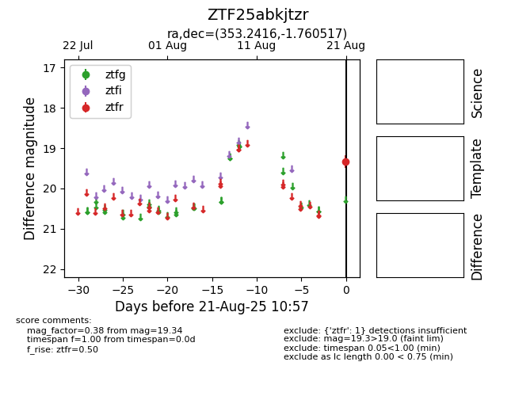

Target ZTF25abkjtzr at 2025-08-21 10:57, see:
FINK: fink-portal.org/ZTF25abkjtzr
Lasair: lasair-ztf.lsst.ac.uk/objects/ZTF25abkjtzr
ALeRCE: alerce.online/object/ZTF25abkjtzr
alt names
ZTF25abkjtzr (ztf,alerce)
coordinates:
equatorial (ra, dec) = (353.2416,-1.76052)
galactic (l, b) = (83.0749,-58.42325)
photometry
last ztfr=19.34
1 ztfr detections
